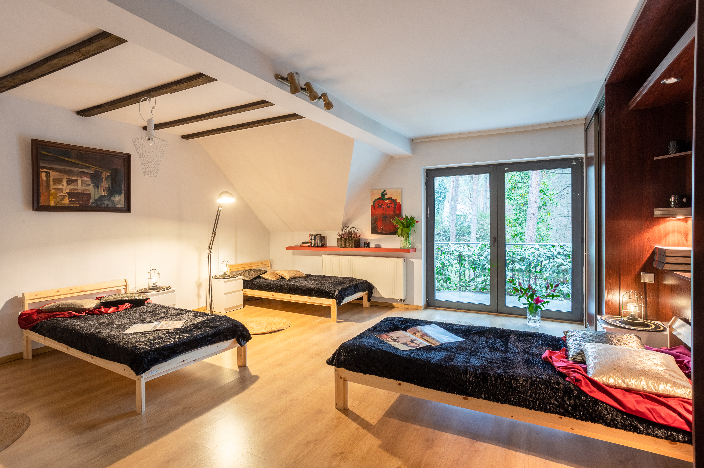
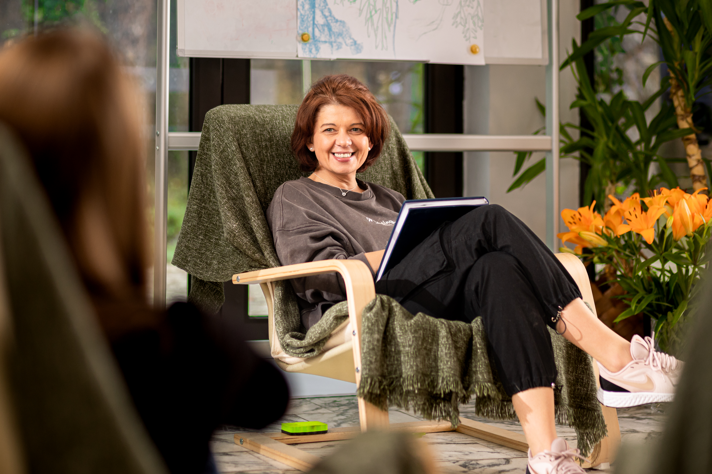

Prywatny ośrodek leczenia uzależnień · Magdalenka
Zostaw numer. Oddzwonimy w ciągu 15 minut.
Detoks i terapia w domu wśród sosen, 20 minut od Warszawy. Nie musisz nic dziś postanawiać — jedna rozmowa wystarczy, żeby wiedzieć, jak to wygląda.
🔒Numer trafia wyłącznie do terapeuty dyżurnego. Nie zapisujemy go w żadnej bazie marketingowej i nie wysyłamy SMS-ów z ofertami.
Mamy Twój numer. Oddzwonimy.
Jeśli w tym czasie zmienisz zdanie, wystarczy nie odbierać. Nie oddzwaniamy po raz drugi bez Twojej zgody.
Nie chcesz czekać? Zadzwoń sam — dyżur trwa całą dobę

Droga, którą przejdziesz
Cztery kroki, żadnych niespodzianek
01
Telefon
Odbiera terapeuta, nie sprzedawca. Nie musisz podawać nazwiska. Pytamy tylko o to, co potrzebne, żeby ocenić sytuację.
02
Przyjazd
Jeśli mamy wolne miejsce, możesz przyjechać tego samego dnia. Odbieramy z dworca albo lotniska.
03
Detoks
Zwykle 7–10 dni pod opieką lekarza. Celem jest przejść to najłagodniej, jak się da, i wyspać się.
04
Terapia
28 dni pracy w małej grupie i sesji indywidualnych. Możesz ją skrócić lub wydłużyć — decydujesz Ty.

Dla siebie
Jeśli dzwonisz w swojej sprawie, nie musisz mieć planu ani gotowej decyzji. Wystarczy, że powiesz, jak jest. Pierwszego dnia nikt nie każe Ci opowiadać o sobie przy grupie.
Co dzieje się pierwszego dnia →Dla rodziny
Możesz zadzwonić bez wiedzy bliskiej osoby. Powiemy, co zwykle pomaga, a co pogarsza sprawę, i przygotujemy z Tobą plan na jedną rozmowę.
Jak rozmawiać z bliskim →
Magdalenka, 20 minut od Warszawy
Jeden dom, sosnowy las, staw za oknem i cisza, której nie da się podrobić w mieście. Mieszkamy razem — pokoje, wspólny salon, taras i ogród.
Zobacz całe miejsce →Głosy pacjentów
„Pierwsza noc była najtrudniejsza. Rano ktoś po prostu usiadł obok i zapytał, jak spałem."
„Nie musiałem nikomu tłumaczyć, dlaczego tu jestem. To była ulga."
„Bałam się, że będzie jak w szpitalu. Po dwóch dniach tata sam wyszedł na spacer."
Opinie publikujemy anonimowo i wyłącznie za pisemną zgodą autorów.
Pytania
Zapytaj o to, co Cię blokuje
{{ item.a }}
Kontakt
Jeden telefon, jedna decyzja: powiedzieć, jak jest
Dyżur trwa całą dobę, także w weekendy. Rozmowa nie zobowiązuje do przyjazdu i nie kończy się ofertą wysłaną na maila.
☏ +48 000 000 000Wolisz napisać?
🔒Wiadomość czyta wyłącznie terapeuta dyżurny. Nie przekazujemy jej nikomu poza ośrodkiem.